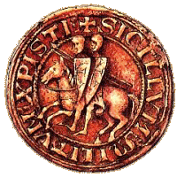
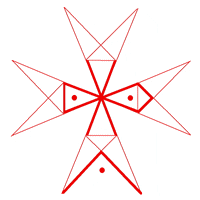
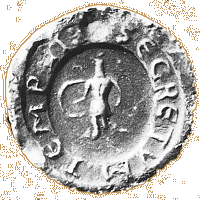

Der Templerorden
Der Templerorden
Geschichte - Großmeister - Symbole
DIE KREUZE
Das 1147 eingeführte Tatzenkreuz, auch "Kanonenkreuz" genannt, wird zum Wahrzeichen der Tempelritter, sodass die Chronisten es bald nur noch als "Templerkreuz", "Tempelkreuz" oder auch "Tempelritterkreuz" bezeichnen, ohne dabei unbedingt dessen Farbe zu erwähnen. Das lässt darauf schließen, dass Formen und Farben allgemein bekannt waren. Nachstehend eine Abbildung der verschiedenen Kreuze, die vom Templerorden verwendet wurden:
DIE SIEGEL
Dieses "Siegel der Ritter Christi" (Sigillum Militum Christi) ist eines der bekanntesten des Templerordens, nämlich dasjenige des 19. Großmeisters, Renaud de Vichier: Es zeigt zwei gerüstete Ritter mit Lanze auf einem Pferd, das von dextre (rechts) nach senestre (links) galoppiert. Die Ritter sind Boten der Templer, die das aus Osten kommende Licht ankündigen.
Das Siegel kann auch die anfängliche Armut des Ordens symbolisieren, verbunden mit einer Hommage an die ersten zwei Mitglieder, Hugo von Payens und Gottfried von Saint-Omer, als sich die Ritterschaft des Tempels noch "Orden der Armen Ritterschaft Christi vom salomonischen Tempel" nannte. Auf einer noch tieferer Ebene kann das Bild auch auf die zweifache Ausrichtung des Ordens verweisen, Exoterik und Esoterik, Soldatentum und Mönchtum, wie auch auf die zweifache Natur des Menschen, Göttlichkeit und Menschlichkeit. Letztendlich stellt das Bild auch die Dreiteilung aller lebenden Wesen in spiritus (Geist), animus (Seele) und corpus (Körper) dar.
Nachstehend weitere Siegel, die ebenfalls vom Templerorden verwendet wurden:
DIE GEHEIMSCHRIFT DER TEMPLER
Der erste Auftrag der Tempelritter war der Schutz der Pilger im Heiligen Land. Bald wichen sie jedoch immer mehr von dieser ursprünglichen Aufgabe ab und wendeten sich Geldgeschäften zu. Das damit erworbene Vermögen machte sie zu Geldgebern von König und Papst. Zur Sicherheit verschlüsselten sie die Kreditbriefe, die zwischen den 9.000 Kommandanturen zirkulierten. Das dazu verwendete Alphabet wurde aus dem sogenannten 8-zackigen "Kreuz der acht Seligpreisungen" abgeleitet, dem Wahrzeichen des Ordens:
Jeder Buchstabe wurde wie nachstehend illustriert durch ein Symbol ersetzt:
DIE ZIFFERN 3, 8 UND 9
In den traditionellen Gesellschaften dienen Ziffern und Zahlen nicht ausschließlich der Beschreibung von Mengen, sondern darüber hinaus auch dem Verweis auf symbolische Verbindungen oder Grundlagen. Diese Ziffern drücken Ideen und Kräfte aus, werden zu "lebenden Wesen", die über Kraftfelder und vitale Ströme verfügen. Wenn sie ausgesprochen werden, können sie eine unsichtbare, aber durchaus reale "Strömung" in Bewegung setzen, die die Realität, auf die sich die Ziffer oder Zahl jeweils bezieht, beeinflusst. Der Kosmos besteht aus einer Vielzahl von Zahlen, daher die besondere Bedeutung deren Interpretation, die als eine der ältesten symbolischen Praktiken gelten kann.
Für Platon stellt die Kenntnis von Ziffern und Zahlen das höchste Wissen und die Quintessenz der inneren wie auch der kosmischen Harmonie dar.
Für den Hl. Martin entsprechen Ziffern und Zahlen den sichtbaren Hüllen aller lebenden Wesen, deren körperliche Harmonie und deren vitale, räumliche und temporelle Kräfte sie lenken. Auch bestimmen sie deren unabhängige Beziehungen zum Grundprinzip aller Dinge. Es handelt sich um ewige Prinzipien, die mit der Wahrheit einhergehen und dem göttlichen Geist entspringen.
Der Philosoph Philolaus bemerkte: "Das Grundwesen der Zahl lehrt uns alles Wissenswerte über das Obskure und Unbekannte. Nur die reine Wahrheit entspricht der Natur der Zahlen und ist gemeinsam mit ihnen entstanden".
Die Entzifferung der Zahlen ermöglicht es, das Zentrum alles Wissens von der sichtbaren und unsichtbaren Welt zu erreichen und bis zur göttlichen Substanz vorzudringen. Diese Macht des Nummerischen konnte den Templern nicht entgehen, die bevorzugt bestimmte fundamentale Zahlen verwendeten und diese in zahlreiche Aspekte ihres spirituellen und weltlichen Lebens einfließen ließen. Einige moderne Autoren haben zügellos, ganz nach Lust und Laune, das "Ziffernsystem der Templer" ins Unermessliche erweitert, während andere genau dem gegenteiligen Ansatz frönten und von einem reinen, simplen Zufall sprechen. Die letztere Betrachtungsweise wirft zumindest eine Frage auf. Da traditionelle Gedankenwelten (wie diejenige des Mittelalters z. B.) keinen Zufall kennen, müssen die von den Templern verwendeten Zahlen, die erstaunlicherweise immer wieder auftreten, auf etwas verweisen. Und das kann nur eine untergründige, "transzendente Realität" sein, die dem göttlichen Geist, dem obersten Prinzip entstammt. Ihre Rolle ist es, die Templer "auszuzeichnen" und zu "informieren", sodass sie dadurch ihre wahre Persönlichkeit erhalten, in Übereinstimmung mit ihrer eigentlichen Natur und Aufgabe.
Im Orden stößt man allerorts auf drei Zahlen: die 3, die 9 (das Quadrat von 3) und die 8.
Die Ziffer 3 (omnipräsent)
- Die 3 Gelübde (allen Mönchsorden gemein)
- Die 3 obligatorischen Almosen pro Woche
- Die 3 Fastenzeiten pro Jahr
- Die 3 Mahlzeiten am Tag
- Die 3 Mahlzeiten mit Fleisch pro Woche
- Die 3 Erscheinungen des Novizen vor dem Kapitel vor seiner Aufnahme
- Die Verpflichtung zur Aufnahme des Kampfes bei einem gegen drei (3)
- Die 3 Angriffe des Feindes vor dem Rückschlag der Templer
- Die 3 Pferde, die ein Templer für eine Expedition erhielt.
- Die Verpflichtung für jeden Templer, 3 Schritte vor dem Abakus des Meisters innezuhalten.
- Die 3 von den Kaplanen des Ordens pro Woche abzuhaltenden Messen
- Die 3 initiatischen Küsse, im Rahmen der Prozesse als "obszöne Küsse" bezeichnet, die die Brüder von denen erhielten, die sie empfingen: Einen Kuss auf die Lippen, den Nabel und das Rückgrat laut Hugues de Bure, bzw. auf den Mund, den Anus und den Penis laut Raoul de Gisy (siehe B. Marillier, op. cit.).
- Die 3 Kreuzzeichen, die die Templer vor jedem Kampf machen mussten.
- Die 3 Farben des Templerordens
- Die 3 Provinzen des Templerordens im Orient
- Die 3 Schlüssel der Börse des Meisters und der zwei hohen Würdenträger des Ordens
- Die 3 hohen Würdenträger des Ordens, die allen Templern vorsaßen: Meister, Seneschall und Marschall.
- Die 3 Gruppen von Mönchsrittern zu Pferd, aus denen ein Schwadron der Templer bestand.
- Die 3 Fenster oder Fenstergruppen, die in den Kirchen und Kapellen des Ordens häufig Licht spendeten.
- Die 3 Bögen in den Kirchen und Kapellen des Ordens
Der Ziffer 3 wird allgemein besondere Bedeutung beigemessen. Die erste Primzahl drückt das Spirituelle und Intellektuelle in Gott, im Universum und im Menschen aus. Diese Interpretation war bereits bei den Kelten geläufig. Die 3 ist die Synthese der dreifachen Einheit des lebenden Wesens und drückt das Ergebnis der Vereinigung von 1 (männliches Prinzip) und 2 (weibliches Prinzip) aus, d. h. der Verbindung von Himmel und Erde. Damit ist die Ziffer 3 der perfekte Ausdruck des Göttlichen, der kosmischen Harmonie und deren vollkommener Manifestation. Darüber hinaus steht die 3 für eine Vielzahl von Dreierbeziehungen (Geist/Seele/Körper, Leben/Tod/Auferstehung, Himmel/Erde/Hölle usw.) sowie für zahlreiche heidnische Dreiergottheiten, insbesondere im indo-europäischen und christlichen Raum.
Die Ziffer 9
- Die 9 ursprünglichen Gründer des Ordens
- Die 9 zur Bildung einer Kommandantur erforderlichen Templer
- Die 9 Provinzen des Templerordens im Okzident
- Die 9 Jahre der Entstehungszeit des Templerordens (1118 bis 1127)
- Die 72 Artikel (7 + 2 = 9) der Grundregel des Ordens
- Die 180 Jahre (1 + 8 + 0 = 9) der Existenz des Ordens
- Die 9.000 Kommandanturen der Templer (eine von Matthieu Paris angegebene, nicht überprüfbare Zahl)
- Die 117 (1 + 1 + 7 = 9) Anklagen im Rahmen der Prozesse
- Der Tod des letzten Meisters, Jacob von Molay, ist ebenfalls durch die 9 gekennzeichnet: Er wurde am 18. (1 + 8 =9) März 1314(1+3+1+4=9) hingerichtet.
Die letzte der Einerzahlen besitzt einen starken, rituellen Wert. Sie kündigt gleichzeitig Anfang und Ende an, den Übergang zu einer neuen Ebene, die zu einer Neugeburt führt. Die 9 ist die Maßzahl der Trächtigkeit und symbolisiert die Belohnung der Anstrengungen und die Vervollkommnung der Schöpfung. Zahl der Novene (neun Tage Gebet), Quelle der Gnade - die 9 (Aeneas) entspricht der Anzahl an Stufen (die Leitern des Jakob und des Josef von Arimathäa umfassen 9 Sprossen), die der Gottsuchende zu überwinden hat, in Übereinstimmung mit dem Bild der neunten Tarot-Karte, die einen Einsiedler oder Pilger zeigt. Nicht zuletzt ist 9 die Zahl desjenigen, der den göttlichen Willen erfüllt.
Die Ziffer 8
- Die 8 Tage Buße, die einem Templer für einen leichten Fehltritt auferlegt wurden.
- Die 8 Sakramente, die die Templer empfingen.
- Die 8 Zacken des Kreuzes mit den gebogenen Außenlinien der Kreuzarme
- Die 8 Schwüre, die ein zukünftiger Templer zu leisten hatte.
Man trifft jedoch vor allem in der Architektur des Templerordens auf die 8, in der oktogonalen Form der Kirchen und Kapellen, auch wenn dies nicht systematisch von den Templern angewendet worden zu sein scheint.
Die Zahl 8 symbolisiert Zusammenfassung, sie steht für das kosmische Gleichgewicht, denn sie trägt in sich die vier Himmelsrichtungen und die vier Zwischenrichtungen.
Die 8 verweist auf die Verurteilung der Gottlosen und die Belohnung der Gerechten, sie ist das Symbol der Vervollkommnung und des Jüngsten Tages, der Thronbesteigung. Daher auch ihr Bezug zu Maria.
Aber vor allem stellt die 8, als Folge der 7 Schöpfungstage, den "Übergang" zu einem anderen Leben dar, eine Wiedergeburt und Auferstehung. Aus diesem Grund wurden die Taufbecken und ersten Taufkirchen oktogonal angelegt (Kirchen in Poitiers, Fréjus, Aix-en-Provence, Ravenne usw.).
Über das christliche Oktogon gelangt man von der profanen und irdischen Welt (repräsentiert durch das Quadrat) zur heiligen und himmlischen Welt (repräsentiert durch den Kreis oder die Kuppel). Diese Aufgabe hatten die Kirchen und Kapellen der Templer zu erfüllen.
Es sei noch zu erwähnen, dass die 8 als Symbol des Urteilsspruchs über das Lamm, wie in der Apokalypse angekündigt, über den Gerechten und den geprüften Christus gilt, wie Melchisedeck, wie die Figur des "Königs der Gerechten" oder des "Königs der Welt".
DAS MAGISCHE ABRAXAS-MOTIV
Die magische und heilige Formel Abraxas entspricht in der griechischen Gnostik dem Namen des Jahresgottes. Das Wort ist auf die sieben Anfangsbuchstaben des Gottesnamens im Hebräischen zurückzuführen und versinnbildlicht die sieben Planeten, die sieben Erzengel, die sieben Todsünden, die sieben Tage usw. Die sieben Buchstaben des Worts wurden gemäß dem griechischen Zahlensystem in ihren Zahlenwert übertragen und dann addiert. Das Ergebnis ist 365, d. h. die Anzahl der Tage im Sonnenjahr. Damit symbolisiert das Wort die Gesamtheit der Schöpfung, des Kosmos und der Erkenntnis (Gnosis). Der Hl. Hieronymus glaubt in Abraxas die mystische und geheime Zahl des Mithras zu erkennen, dessen Buchstaben im Griechischen (MEIOPAE) ebenfalls die Summe 365 ergeben.
Die Abraxassteine liegen in Intaglio-Form vor (Edelstein mit einer vertieft geschnittenen, bildlichen Darstellung) oder als Edelsteine, die zunächst von christlichen Gnostikern, dann von den Meistern des Templerordens am Ring getragen und von diesen häufig als Gegensiegel verwendet wurden oder die direkt als Siegel Anwendung fanden. Diese Edelsteine gehen auf das II. Jhdt. n. Chr. zurück, auf die Zeit des berühmten Gnostikerphilosophen Basilides aus Alexandrien, dessen Doktrin eine Synthese der christlichen, ägyptischen, mithriakischen, griechischen und keltischen Strömungen versuchte. Bestimmte Aspekte seiner Doktrin finden sich in derjenigen des Templerordens wieder. Die Templer verwendeten Abraxassteine seit der Zeit Hugo von Payens, die diesem aus dem Erbe der Familie der Grafen der Champagne zufielen und der deren Verwendung wieder einführte. Der Rückgriff auf Abraxassteine war jedoch keineswegs auf die Templer beschränkt, sondern blieb während des gesamten Mittelalters eine gängige Praxis und war in den Zünften weit verbreitet, insbesondere unter Maurer- und Steinmetzmeistern, wie auch in der Bourgeoisie und im Adel.
Die zentrale Figur ist ein Fabelwesen: Der Rumpf und die oberen Gliedmaßen sind die eines Menschen, wobei der Oberkörper von einer antiken Rüstung bedeckt wird, die Arme sind nackt. Der Hahnenkopf zeigt einen geraden Schnabel und ist nach links oder rechts gen Himmel gerichtet. Statt der unteren Gliedmaßen winden sich zwei Schlangen an beiden Seiten nach oben. Das Ungeheuer hält zwei Gegenstände in den Händen, einen Rundschild in der Rechten und eine Peitsche oder Geißel in der Linken, die manchmal auch durch einen Stock ersetzt wird. Diese wundersame Gestalt vereint verschiedene "mythisch-göttliche" Natursymbole in sich, deren initiatischer Wert den Templern nicht entgehen konnte.
Zunächst die zwei komplementären Symbole, d. h. der Hahn - der offensichtlich an die Stelle des Adlers tritt - und die Schlange. Der Hahn, Symbol für Weisheit und Vorsicht, verjagt mit seinem Gesang das Dunkel und ermöglicht den Aufgang und das Leuchten der Sonne. Er versinnbildlicht den Initiierten, der im Anschluss an den initiatischen Tod der Nacht im Licht eines neuen und von allem Unreinen und Schändlichen gereinigten Lebens neu erwacht. Die Schlange ist die Verkörperung der tellurischen und chthonischen Kräfte und symbolisiert hier die tellurische Energie, die notwendig ist für den Prozess der Neugeburt, für das durch die Erkenntnis sublimierte Leben, die aus dem Guten - die Köpfe der Schlangen sind gen Himmel gerichtet - und dem Universum des perfekten Geistes hervorgeht. Durch seine regelmäßigen Häutungen stellt sich die Schlange als Zeichen der unendlichen Urbewegung und der ewigen Abfolge der Zyklen dar. Die antike Rüstung verweist auf die Notwendigkeit des Kampfes, um Erkenntnis und Weisheit zu erringen, die niemals gegeben werden, sondern stets erkämpft werden müssen. Der Rundschild, der häufig die griechischen Buchstaben I A W, Jota, Alpha, Omega trägt, symbolisiert den Schutz des Initiierten auf seiner Suche nach Erkenntnis und Weisheit, die Peitsche bzw. der Stock versinnbildlicht Macht.
Der Abraxasstein der Templer, dessen Verwendung fast ausschließlich dem Meister und den hohen Würdenträgern vorbehalten blieb, weist häufig die drei griechischen Buchstaben auf, die allerdings nicht auf dem Schild erscheinen, sondern auf dem Siegelfeld, sowie sieben Sterne für die sieben Buchstaben des Worts Abraxas. Die Inschrift ist stets dieselbe: SECRETVM TEMPLI. Dazu erübrigt sich jeder Kommentar.
In Bälde...
- DER BAPHOMET